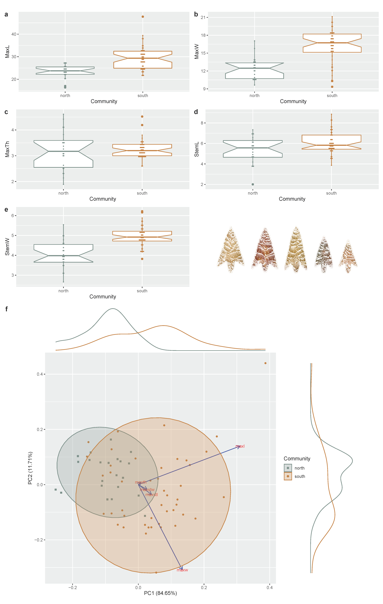
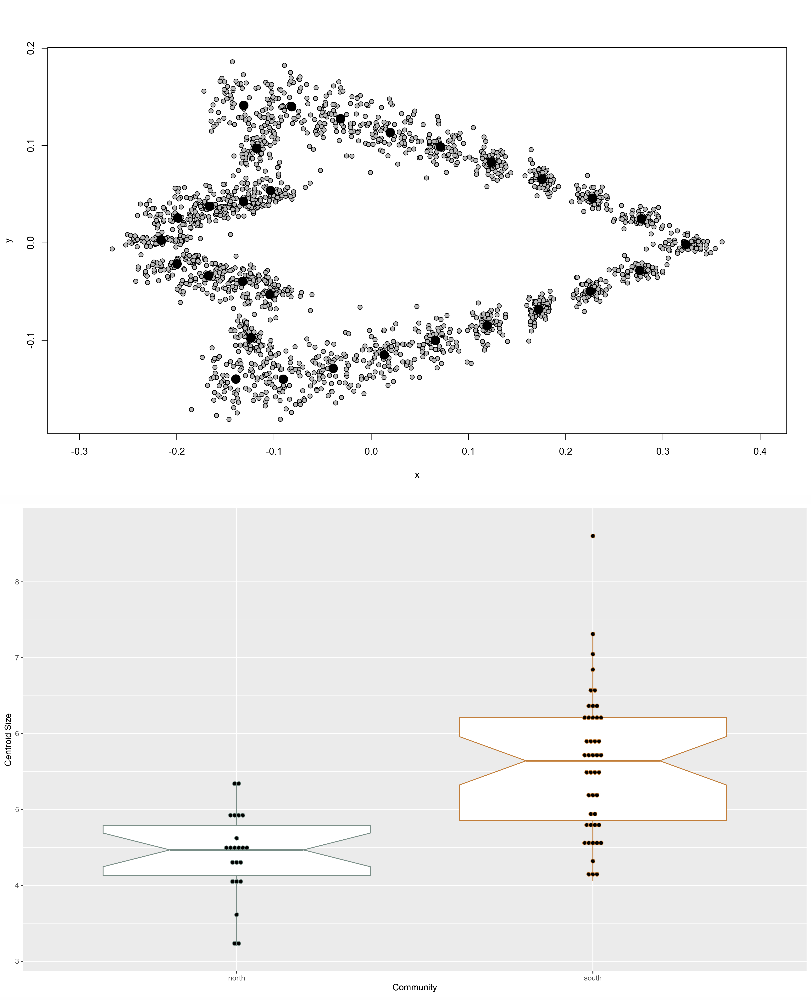
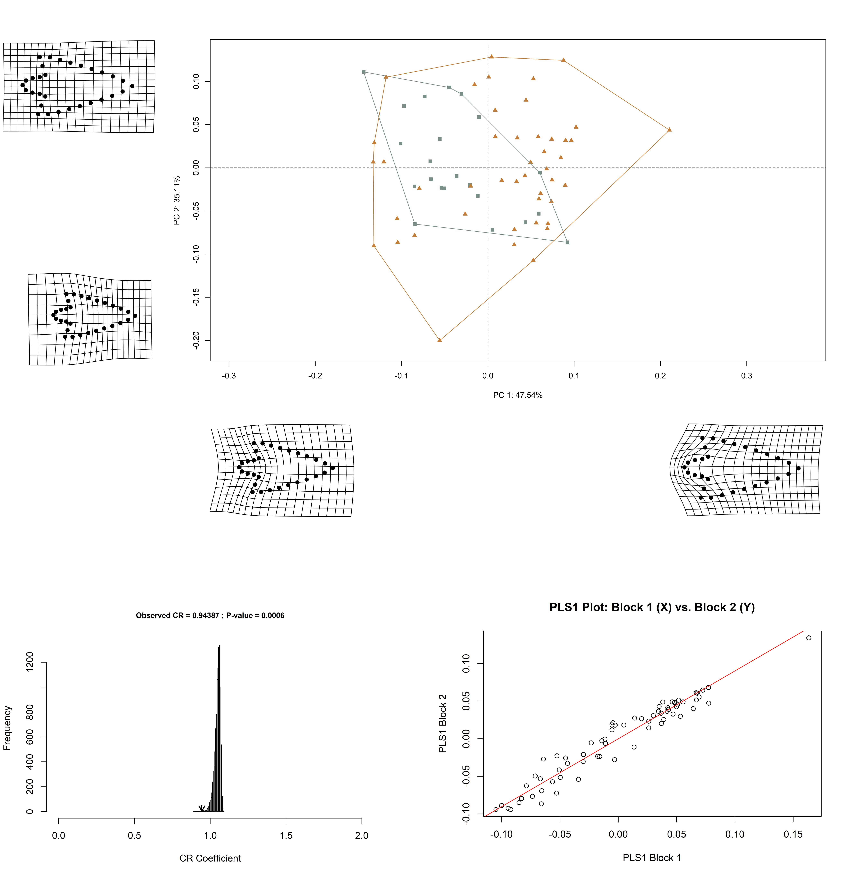

Perdiz arrow points from Caddo burial contexts aid in defining discrete behavioral regions
Robert Z. Selden, Jr. ![]()
John E. Dockall
“The question of questions for mankind—the problem which underlies all others, and is more deeply interesting than any other—is the ascertainment of the place which man occupies in nature, and of his relation to the universe of things.” –H. Thomas Henry Huxley, Man’s Place in Nature
Basis of inquiry
Recent research into Caddo bottle and biface morphology yielded evidence for two distinct behavioral regions, across which material culture from Caddo burials expresses significant morphological differences. This study asks whether Perdiz arrow points from Caddo burials differ across the same geography, which would extend the pattern of morphological differences to a third category of Caddo material culture. Perdiz arrow points collected from the geographies of the northern and southern Caddo behavioral regions were employed to test the hypothesis that morphological attributes differ, and are predictable, between the two communities. The analysis of linear metrics indicated a significant difference in morphology by behavioral region. Using the linear metrics combined with the tools of machine learning, a predictive model—support vector machine—was designed to assess the degree to which community differences could be predicted, achieving a receiver operator curve score of 97 percent, and an accuracy score of 94 percent. The subsequent landmark geometric morphometric analysis identified significant differences in Perdiz arrow point shape and size between the behavioral regions—one characterized by a comparatively smaller blade and larger stem (north), and the other by a comparatively larger blade and smaller stem (south)—coupled with significant results for modularity and morphological integration. These findings build directly upon recent investigations that posited two discrete Caddo behavioral regions defined on the basis of discernible morphological differences, which is expanded here to include a third category of Caddo material culture.
Keywords
American Southeast, Caddo, NAGPRA, computational archaeology, archaeoinformatics, machine learning, museum studies, digital humanities, non-Western art history, STEM, STEAM
Primary findings
Linear morphometrics
Sixty seven whole/intact Perdiz arrow points recovered from Caddo burial contexts in Camp, Nacogdoches, and Shelby counties comprise the basis of this study. A standard suite of linear metrics were collected for each specimen, including maximum length, width, thickness, stem length, and stem width. Following collection, data were imported to R (Team 2021), where boxplots were produced, along with a Principal Components Analysis (PCA), followed by a permutational multivariate analysis of variance (perMANOVA) to test whether the morphology of Perdiz arrow points differs between the behavioral regions.

Boxplots illustrate the distribution and mean for each of the five linear variables, and the PCA illustrates over 92 percent of the variation in the sample among PC1 (84.65 percent) and PC2 (11.71 percent). The perMANOVA demonstrated that linear metrics for Perdiz arrow points differ significantly by behavioral region (permutations = 10,000; Rsq = 0.29485; Pr(>F) = 1e-04).
- Perdiz arrow point morphology differs significantly by Caddo community
Machine learning
A support vector machine is a supervised machine learning model regularly used in classifying archaeological materials (S. Bhatt and P. Patalia 2017; Monna et al. 2020; Febriawan et al. 2020; Kadhim and Abed 2021; Zhang, n.d.; Elliot et al. 2021), which has utility in comparing and classifying datasets aggregated from digital repositories, comparative collections, open access reports, as well as other digital assets. For this effort, linear data were imported and modeled using the scikit-learn package in Python (Pedregosa et al. 2011; Buitinck et al. 2013), and subsequently split into training (75 percent) and testing (25 percent) subsets. A standard scaler was used to decrease the sensitivity of the algorithm to outliers by standardizing features, and a nested cross validation of the training set was used to achieve unbiased estimates of model performance.
- Model achieved a cross validation score of 86 percent
- Model achieved a receiver operator curve score of 97 percent
- Model achieved an accuracy score of 94 percent
Geometric morphometrics
Each of the arrow points was imaged using a flatbed scanner (HP Scanjet G4050) at 600 dpi. The landmarking protocol developed for this study included six landmarks and 24 equidistant semilandmarks to characterize Perdiz arrow point shape, and were applied using the StereoMorph package in R (Olsen and Westneat 2015). The characteristic points and tangents used in the landmarking protocol were inspired by the work of Birkhoff (Birkhoff 1933).
Generalised Procrustes Analysis
Landmarks were aligned to a global coordinate system (Kendall 1981, 1984; Slice 2001), achieved through generalized Procrustes superimposition (Rohlf and Slice 1990), performed in R (Team 2021) using the geomorph package (Adams and Otarola-Castillo 2013; Baken et al. 2021). Procrustes superimposition translates, scales, and rotates the coordinate data allowing for comparisons among objects (Gower 1975; Rohlf and Slice 1990). The geomorph package uses a partial Procrustes superimposition that projects the aligned specimens into tangent space subsequent to alignment in preparation for the use of multivariate methods that assume linear space (Rohlf 1999; Slice 2001).

Principal Components Analysis
Principal components analysis [Jolliffe (2002);Revell (2009) was used to visualize shape variation among the arrow points. Shape changes described by each principal axis are commonly visualized using thin-plate spline warping of a reference image or 3D mesh (Klingenberg 2013; Sherratt et al. 2014). A residual randomization permutation procedure (RRPP; n = 10,000 permutations) was used for all Procrustes ANOVAs (Adams and Collyer 2015; Michael L. Collyer and Adams 2018), which has higher statistical power and a greater ability to identify patterns in the data should they be present (Anderson and Ter Braak 2003). To assess whether shape differs by group (region), Procrustes ANOVAs (Goodall 1991) were also run that enlist effect-sizes (z-scores) computed as standard deviates of the generated sampling distributions (M. L. Collyer, Sekora, and Adams 2015). Procrustes variance was used to discriminate between regions and compare the amount of shape variation (morphological disparity) (Zelditch et al. 2004), estimated as Procrustes variance using residuals of linear model fit (Adams et al. 2018). A pairwise comparison of morphological integration was used to test the strength of integration between blade and basal morphology using a z-score [Bookstein et al. (2003);M. L. Collyer, Sekora, and Adams (2015);Adams and Collyer (2016);Adams and Collyer (2019)}.

The analysis of modularity, which compares within-module covariation of landmarks against between-module covariation was significant (Adams and Collyer 2019; Adams and Peres-Neto 2016), demonstrating that Perdiz arrow point blades and bases are, in fact, modular. The test for morphological integration was also significant, indicating that the blades and bases of Perdiz arrow points are integrated. These results demonstrate that blade and base shapes for Perdiz arrow points are predictable; a finding that would have utility in subsequent studies of Perdiz arrow point morphology that incorporate fragmentary specimens.
A Procrustes ANOVA was used to test whether a significant difference exists in Perdiz arrow point (centroid) size (RRPP = 10,000; Rsq = 0.30681; Pr(>F) = 1e-04), followed by another to test whether a significant difference exists in arrow point shape by region (northern vs. southern) (RRPP = 10,000; Rsq = 0.0536; Pr(>F) = 0.0161). While shape and size differ significantly between behavioral regions, the Rsq value for size is just under six times larger than that for shape (smaller in the north; larger in the south), suggesting that between-region differences in Perdiz arrow point size may be more visually apparent than differences in shape. A comparison of mean consensus configurations was used to illustrate shape differences from the northern and southern behavioral regions. Diacritical morphology is characterized by a comparatively smaller blade and larger stem in the north, and by a comparatively larger blade and smaller stem in the south. Further, the angle between the shoulder and base is more acute, with a base that is generally shorter and narrower in the southern behavioral region.
- Perdiz arrow point shape differs significantly by Caddo community
- Perdiz arrow point size differs significantly by Caddo community
- Perdiz arrow points exhibit significant modularity
- Perdiz arrow points exhibit significant blade/base morphological integration

Acknowledgments
We express our gratitude to the Caddo Nation of Oklahoma and the Anthropology and Archaeology Laboratory at Stephen F. Austin State University for the requisite permissions and access to the NAGPRA items from the Washington Square Mound site and Turner collection, and to Tom A. Middlebrook for brokering access to the Perdiz arrow points from Caddo burials at the Morse Mound site. Thanks also to David K. Thulman, Christian S. Hoggard, Dean C. Adams, Michael L. Collyer, Emma Sherratt, Lauren Butaric, and Kersten Bergstrom for their constructive criticisms, comments, and suggestions throughout the development of this research program, and to the editors and anonymous reviewers for their comments and constructive criticisms, which further improved the manuscript and supplementary materials.
Funding
Components of the analytical workflow were developed and funded by a Preservation Technology and Training grant (P14AP00138) to RZS from the National Center for Preservation Technology and Training, as well as grants to RZS from the Caddo Nation of Oklahoma, National Forests and Grasslands in Texas (15-PA-11081300-033) and the United States Forest Service (20-PA-11081300-074). Additional funding and logistical support was provided by the Heritage Research Center at Stephen F. Austin State University.
Data management
All data and analysis code associated with this project are openly available through the GitHub repository, which is digitally curated on the Open Science Framework (DOI 10.17605/OSF.IO/VZHJR). Images of all Perdiz arrow points used in this study were made available in an open access comparative collection (https://scholarworks.sfasu.edu/ita-perdiz/), with permission from the Caddo Nation of Oklahoma. These supplementary materials include all analysis data and code used in the study, providing a means for others to reproduce (exactly) those results discussed and expounded upon in this article. The replicable nature of this undertaking provides others with the means to critically assess and evaluate the various analytical components of this study (Gray and Marwick 2019; Peng 2011; Gandrud 2014), which is a necessary requirement for the production of reliable knowledge.
Reproducibility projects in psychology and cancer biology are impacting current research practices across all domains. Examples of reproducible research are becoming more abundant in archaeology (Marwick 2016; Ivanovaitė et al. 2020; Selden Jr., Dockall, and Dubied 2020; Selden Jr. et al. 2021; Selden 2022), and the next generation of archaeologists are learning those tools and methods needed to reproduce and/or replicate research results (Marwick et al. 2019). Reproducible and replicable research work flows are often employed at the highest levels of humanities-based inquiries to mitigate concern or doubt regarding proper execution, and is of particular import should the results have—explicitly or implicitly—a major impact on scientific progress (Peels and Bouter 2018).
Colophon
This version of the analysis was generated on 2022-11-28 06:13:03 using the following computational environment and dependencies:
# what R packages and versions were used?
if ("devtools" %in% installed.packages()) devtools::session_info()─ Session info ───────────────────────────────────────────────────────────────
setting value
version R version 4.2.2 (2022-10-31 ucrt)
os Windows 10 x64 (build 19045)
system x86_64, mingw32
ui RTerm
language (EN)
collate English_United States.utf8
ctype English_United States.utf8
tz America/Chicago
date 2022-11-28
pandoc 2.19.2 @ C:/Program Files/RStudio/bin/quarto/bin/tools/ (via rmarkdown)
─ Packages ───────────────────────────────────────────────────────────────────
package * version date (UTC) lib source
cachem 1.0.6 2021-08-19 [1] CRAN (R 4.2.2)
callr 3.7.3 2022-11-02 [1] CRAN (R 4.2.2)
cli 3.4.1 2022-09-23 [1] CRAN (R 4.2.2)
crayon 1.5.2 2022-09-29 [1] CRAN (R 4.2.2)
devtools 2.4.5 2022-10-11 [1] CRAN (R 4.2.2)
digest 0.6.30 2022-10-18 [1] CRAN (R 4.2.2)
ellipsis 0.3.2 2021-04-29 [1] CRAN (R 4.2.2)
evaluate 0.18 2022-11-07 [1] CRAN (R 4.2.2)
fastmap 1.1.0 2021-01-25 [1] CRAN (R 4.2.2)
fs 1.5.2 2021-12-08 [1] CRAN (R 4.2.2)
glue 1.6.2 2022-02-24 [1] CRAN (R 4.2.2)
htmltools 0.5.3 2022-07-18 [1] CRAN (R 4.2.2)
htmlwidgets 1.5.4 2021-09-08 [1] CRAN (R 4.2.2)
httpuv 1.6.6 2022-09-08 [1] CRAN (R 4.2.2)
jsonlite 1.8.3 2022-10-21 [1] CRAN (R 4.2.2)
knitr 1.41 2022-11-18 [1] CRAN (R 4.2.2)
later 1.3.0 2021-08-18 [1] CRAN (R 4.2.2)
lifecycle 1.0.3 2022-10-07 [1] CRAN (R 4.2.2)
magrittr 2.0.3 2022-03-30 [1] CRAN (R 4.2.2)
memoise 2.0.1 2021-11-26 [1] CRAN (R 4.2.2)
mime 0.12 2021-09-28 [1] CRAN (R 4.2.0)
miniUI 0.1.1.1 2018-05-18 [1] CRAN (R 4.2.2)
pkgbuild 1.4.0 2022-11-27 [1] CRAN (R 4.2.2)
pkgload 1.3.2 2022-11-16 [1] CRAN (R 4.2.2)
prettyunits 1.1.1 2020-01-24 [1] CRAN (R 4.2.2)
processx 3.8.0 2022-10-26 [1] CRAN (R 4.2.2)
profvis 0.3.7 2020-11-02 [1] CRAN (R 4.2.2)
promises 1.2.0.1 2021-02-11 [1] CRAN (R 4.2.2)
ps 1.7.2 2022-10-26 [1] CRAN (R 4.2.2)
purrr 0.3.5 2022-10-06 [1] CRAN (R 4.2.2)
R6 2.5.1 2021-08-19 [1] CRAN (R 4.2.2)
Rcpp 1.0.9 2022-07-08 [1] CRAN (R 4.2.1)
remotes 2.4.2 2021-11-30 [1] CRAN (R 4.2.2)
rlang 1.0.6 2022-09-24 [1] CRAN (R 4.2.2)
rmarkdown 2.18 2022-11-09 [1] CRAN (R 4.2.2)
rstudioapi 0.14 2022-08-22 [1] CRAN (R 4.2.2)
sessioninfo 1.2.2 2021-12-06 [1] CRAN (R 4.2.2)
shiny 1.7.3 2022-10-25 [1] CRAN (R 4.2.2)
stringi 1.7.8 2022-07-11 [1] CRAN (R 4.2.1)
stringr 1.4.1 2022-08-20 [1] CRAN (R 4.2.2)
urlchecker 1.0.1 2021-11-30 [1] CRAN (R 4.2.2)
usethis 2.1.6 2022-05-25 [1] CRAN (R 4.2.2)
xfun 0.35 2022-11-16 [1] CRAN (R 4.2.2)
xtable 1.8-4 2019-04-21 [1] CRAN (R 4.2.2)
yaml 2.3.6 2022-10-18 [1] CRAN (R 4.2.1)
[1] C:/Users/seldenjrz/AppData/Local/R/win-library/4.2
[2] C:/Program Files/R/R-4.2.2/library
──────────────────────────────────────────────────────────────────────────────Current Git commit details are:
# where can I find this commit?
if ("git2r" %in% installed.packages() & git2r::in_repository(path = ".")) git2r::repository(here::here()) Local: main D:/github/perdiz3
Remote: main @ origin (https://github.com/seldenlab/perdiz3)
Head: [e1c6665] 2022-11-27: <edit index>References
Adams, Dean C., and Michael L. Collyer. 2015. “Permutation Tests for Phylogenetic Comparative Analyses of High-Dimensional Shape Data: What you Shuffle Matters.” Journal Article. Evolution 69 (3): 823–29. https://doi.org/10.1111/evo.12596.
———. 2016. “On the Comparison of the Strength of Morphological Integration across Morphometric Datasets.” Journal Article. Evolution 70 (11): 2623–31. https://doi.org/10.1111/evo.13045.
———. 2019. “Comparing the Strength of Modular Signal, and Evaluating Alternative Modular Hypotheses, Using Covariance Ratio Effect Sizes with Morphometric Data.” Journal Article. Evolution 73 (12): 2352–67. https://doi.org/10.1111/evo.13867.
Adams, Dean C., Michael L. Collyer, Antigoni Kaliontzopoulou, and Emma Sherratt. 2018. “Package ’geomorph’: Geometric Morphometric Analyses of 2D/3D Landmark Data. R package version 3.2.1.” Journal Article, no. March 1, 2020. http://geomorphr.github.io/geomorph/.
Adams, Dean C., and Erik Otarola-Castillo. 2013. “geomorph: An R Package for the Collection and Analysis of Geometric Morphometric Shape Data.” Journal Article. Methods in Ecology and Evolution 4 (4): 393–99. https://doi.org/10.1111/2041-210x.12035.
Adams, Dean C., and Pedro Peres-Neto. 2016. “Evaluating modularity in morphometric data: challenges with the RV coefficient and a new test measure.” Journal Article. Methods in Ecology and Evolution 7 (5): 565–72. https://doi.org/10.1111/2041-210x.12511.
Anderson, Marti J., and Cajo J. F. Ter Braak. 2003. “Permutation Tests for Multi-Factoral Analysis of Variance.” Journal Article. Journal of Statistical Computation and Simulation 73 (2): 85–113. https://doi.org/10.1080=0094965021000015558.
Baken, Erica K., Michael L. Collyer, Antigoni Kaliontzopoulou, and Dean C. Adams. 2021. “geomorph v4.0 and gmShiny: Enhanced analytics and a new graphical interface for a comprehensive morphometric experience.” Journal Article. Methods in Ecology and Evolution. https://doi.org/10.1111/2041-210x.13723.
Birkhoff, George D. 1933. Aesthetic Measure. Book. Cambridge: Harvard University Press.
Bookstein, Fred L., Philipp Gunz, Philipp Mitterocker, Hermann Prossinger, Katrin Schaefer, and Horst Seidler. 2003. “Cranial Integration in Homo: Singular Warps Analysis of the Midsagittal Plane in Ontogeny and Evolution.” Journal Article. Journal of Human Evolution 44 (2): 167–87. https://doi.org/10.1016/S0047-2484(02)00201-4.
Buitinck, Lars, Gilles Louppe, Mathieu Blondel, Fabian Pedregosa, Andreas Mueller, Olivier Grisel, Vlad Niculae, et al. 2013. “API Design for Machine Learning Software: Experiences from the Scikit-Learn Project.” In ECML PKDD Workshop: Languages for Data Mining and Machine Learning, 108–22.
Collyer, M. L., D. J. Sekora, and D. C. Adams. 2015. “A method for analysis of phenotypic change for phenotypes described by high-dimensional data.” Journal Article. Heredity (Edinb) 115 (4): 357–65. https://doi.org/10.1038/hdy.2014.75.
Collyer, Michael L., and Dean C. Adams. 2018. “RRPP: An R Package for Fitting Linear Models to High-Dimensional Data using Residual Randomization.” Journal Article. Methods in Ecology and Evolution 9 (7): 1772–79. https://doi.org/https://doi.org/10.1111/2041-210X.13029.
Elliot, T., R. Morse, D. Smythe, and A. Norris. 2021. “Evaluating machine learning techniques for archaeological lithic sourcing: A case study of flint in Britain.” Journal Article. Sci Rep 11 (1): 10197. https://doi.org/10.1038/s41598-021-87834-3.
Febriawan, Hendra Kurnia, Omar Moefti, Dwi Haryanto, and Taufan Wiguna. 2020. “Detection and characterization of an archaeological wreck site in Sunda Strait, Indonesia.” Journal Article. Forum Geografic XIX (1): 60–71. https://doi.org/10.5775/fg.2020.054.i.
Gandrud, Christopher. 2014. Reproducible Research with r and RStudio. Book. The r Series. London: CRC Press.
Goodall, Colin. 1991. “Procrustes Methods in the Statistical Analysis of Shape.” Journal Article. Journal of the Royal Statistical Society. Series B (Methodological) 53 (2): 285–339.
Gower, J. C. 1975. “Generalized Procrustes Analysis.” Journal Article. Psychometrika 40 (1): 33–51. https://doi.org/https://doi.org/10.1007/BF02291478.
Gray, Charles T., and Ben Marwick. 2019. “Truth, Proof, and Reproducibility: There’s No Counter-Attack for the Codeless.” Book Section. In Statistics and Data Science, 111–29. Communications in Computer and Information Science. https://doi.org/10.1007/978-981-15-1960-4_8.
Ivanovaitė, Livija, Kamil Serwatka, Christian Steven Hoggard, Florian Sauer, and Felix Riede. 2020. “All These Fantastic Cultures? Research History and Regionalization in the Late Palaeolithic Tanged Point Cultures of Eastern Europe.” European Journal of Archaeology 23 (2): 162–85. https://doi.org/10.1017/eaa.2019.59.
Jolliffe, Ian T. 2002. Principal Component Analysis. Book. New York: Springer.
Kadhim, Israa, and Fanar Abed. 2021. “The Potential of LiDAR and UAV-Photogrammetric Data Analysis to Interpret Archaeological Sites: A Case Study of Chun Castle in South-West England.” Journal Article. ISPRS International Journal of Geo-Information 10 (1). https://doi.org/10.3390/ijgi10010041.
Kendall, David G. 1981. “The Statistics of Shape.” Book Section. In Interpreting Multivariate Data, edited by Vic Barnett, 75–80. New York: Wiley.
———. 1984. “Shape Manifolds, Procrustean Metrics, and Complex Projective Spaces.” Journal Article. Bulletin of the London Mathematical Society 16 (2): 81–121. https://doi.org/10.1112/blms/16.2.81.
Klingenberg, Christian Peter. 2013. “Visualizations in Geometric Morphometrics: How to Read and How to Make Graphs Showing Shape Changes.” Journal Article. Hystrix 24: 15–24.
Marwick, Ben. 2016. “Computational Reproducibility in Archaeological Research: Basic Principles and a Case Study of Their Implementation.” Journal of Archaeological Method and Theory 24 (2): 424–50. https://doi.org/10.1007/s10816-015-9272-9.
Marwick, Ben, Li-Ying Wang, Ryan Robinson, and Hope Loiselle. 2019. “How to Use Replication Assignments for Teaching Integrity in Empirical Archaeology.” Advances in Archaeological Practice 8 (1): 78–86. https://doi.org/10.1017/aap.2019.38.
Monna, Fabrice, Jerome Magail, Tanguy Rolland, Nicolas Navarro, Josef Wilczek, Jamiyan-Ombo Gantulga, Yury Esin, Ludovic Granjon, Anne-Caroline Allard, and Carmela Chateau-Smith. 2020. “Machine Learning for Rapid Mapping of Archaeological Structures Made of Dry Stones - Example of Burial Monuments from the Khirgisuur Culture, Mongolia -.” Journal Article. Journal of Cultural Heritage 43: 118–28. https://doi.org/10.1016/j.culher.2020.01.002.
Olsen, Aaron M., and Mark W. Westneat. 2015. “StereoMorph: An r Package for the Collection of 3D Landmarks and Curves Using a Stereo Camera Set-up.” Journal Article. Methods in Ecology and Evolution 6 (3): 351–56. https://doi.org/10.1111/2041-210x.12326.
Pedregosa, F., G. Varoquaux, A. Gramfort, V. Michel, B. Thirion, O. Grisel, M. Blondel, et al. 2011. “Scikit-learn: Machine Learning in Python.” Journal of Machine Learning Research 12: 2825–30.
Peels, Rik, and Lex Bouter. 2018. “Humanities Need a Replication Drive Too.” Nature 558 (7710): 372. https://doi.org/10.1038/d41586-018-05454-w.
Peng, Roger D. 2011. “Reproducible Research in Computational Science.” Journal Article. Science 334 (6060): 1226–27. https://doi.org/10.1126/science.1213847.
Revell, L. J. 2009. “Size-Correction and Principal Components for Interspecific Comparative Studies.” Journal Article. Evolution 63 (12): 3258–68. https://doi.org/10.1111/j.1558-5646.2009.00804.x.
Rohlf, F. James. 1999. “Shape Statistics: Procrustes Superimpositions and Tangent Spaces.” Journal Article. Journal of Classification 16 (2): 197–223. https://doi.org/10.1007/s003579900054.
Rohlf, F. James, and Dennis E. Slice. 1990. “Extensions of the Procrustes Method for the Optimal Superimposition of Landmarks.” Journal Article. Systematic Zoology 39 (1): 40–59. https://doi.org/10.2307/2992207.
S. Bhatt, Malay, and Tejas P. Patalia. 2017. “Indian Monuments Classification using Support Vector Machine.” Journal Article. International Journal of Electrical and Computer Engineering 7 (4). https://doi.org/10.11591/ijece.v7i4.pp1952-1963.
Selden Jr., Robert Z., John E. Dockall, C. Britt Bousman, and Timothy K. Perttula. 2021. “Supplementary materials for paper: Shape as a function of time + raw material + burial context? A preliminary analysis of Perdiz arrow points in the southern Caddo area.” Journal Article. Open Science Framework. https://doi.org/10.17605/OSF.IO/DEJ74.
Selden Jr., Robert Z., John E. Dockall, and Morgane Dubied. 2020. “A quantitative assessment of intraspecific morphological variation in Gahagan bifaces from the southern Caddo area and central Texas.” Journal Article. Southeastern Archaeology 39 (2): 125–45. https://doi.org/10.1080/0734578x.2020.1744416.
Selden, Robert Z. 2022. “Morphologically Similar, but Regionally Distinct: Perdiz Arrow Points from Caddo Burial Contexts in the American Southeast.” Journal Article. Lithic Technology (in press). https://doi.org/10.1080/01977261.2022.2095492.
Sherratt, Emma, David J. Gower, Christian P. Klingenberg, and Mark Wilkinson. 2014. “Evolution of Cranial Shape in Caecilians (Amphibia: Gymnophiona).” Journal Article. Evolutionary Biology 41: 528–45. https://doi.org/https://doi.org/10.1007/s11692-014-9287-2.
Slice, Dennis E. 2001. “Landmark Coordinates Aligned by Procrustes Analysis Do Not Lie in Kendall’s Shape Space.” Journal Article. Systematic Biology 50 (1): 141–49. https://doi.org/10.1080/10635150119110.
Team, R Core Development. 2021. R: A Language and Environment for Statistical Computing. Electronic Resource,. Book. Vienna, Austria: R Foundation for Statistical Computing. http://www.R-project.org.
Zelditch, Miriam Leah, Donald L. Swiderski, H. David Sheets, and William L. Fink. 2004. Geometric Morphometrics for Biologists : A Primer. Book. Burlington: Elsevier Science. http://ebookcentral.proquest.com/lib/tamucs/detail.action?docID=298308.
Zhang, Ru. n.d. “The Ancient Ceramics Identification Methods Based on Non-Linear Support Vector Machines.” Conference Proceedings. In Applied Mechanics and Materials, 278:1201–4. Trans Tech Publ.